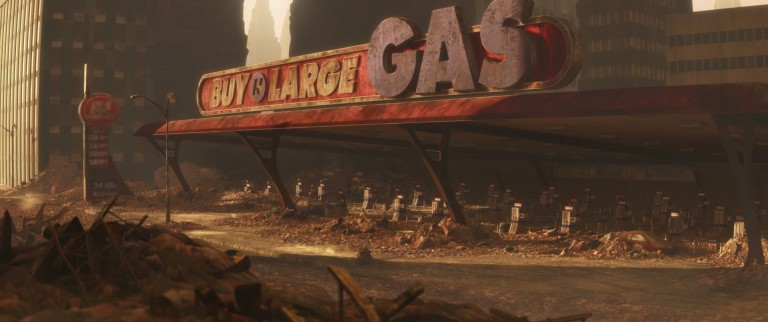

|
In this project, we will attempt to implement a physics-inspired algorithm for simulating building and statue erosion due to physical or chemical effects. As an example, given a mesh, we could simulate weathering via sandstorms by indenting mesh faces when they are impacted by simulated sand particles.
Weathered buildings and statues have complex geometric shapes that pose a significant challenge for 3D-animators and artists seeking to render realistic scenes (Figure 1). In order to give objects the appearance of age, it appears that animators have previously relied mostly on texture and shading cues (Figure 2). However, adding shape and geometry-based cues could help to convey the impression of age and lead to more effective animations and art.
|
|
|  |
The primary challenge in adding these geometric cues to convey age is that they are extremely complex and would be prohibitively time-consuming to do by hand. Therefore, we will attempt to create an automatic system to artificially age or weather a pre-existing mesh or other 3D-model.
Our approach will be inspired by physics if not a physical simulation. To approximate weathering from physical effects, we can simulate collisions between particles and the 3D-object (which could be modelled as a mesh, or using a grid- or particle-based approach). For example, given a mesh, we could simulate weathering via sandstorms by indenting mesh faces when they are impacted by simulated sand particles. On the other hand, to render weathering from chemical effects, we would start by re-implementing ideas from this paper, since we do not have intuition about weathering from chemical effects.
Deliverables:
We will measure the performance of our simulation by visually comparing the mesh surface to images of existing eroded structures, like the Easter Island statues. It is difficult to quantitatively measure the success of our simulations, so we will rely on qualitative observations of comparisons between the textures of our simulation-eroded objects and reality-eroded objects.
Ultimately, we’d like to see if this simple physics-inspired simulation is a feasible mechanism to generate 3D eroded textures. Otherwise, it will be interesting to see what results this approach produces!
If we have time, we’d like to try to model acid rain erosion as well. We believe this would be significantly more difficult, given that we would have to simulate the path of water flow on the statue and the time spent in any divots before evaporating. We would also have to model how the acid chemically reacts with the stone to produce interesting effects, as in this paper.
Another stretch goal would include creating a web applet to allow viewers to interactively simulate different conditions. Users could change parameters like wind velocity and duration of erosion and then watch the animation of the statue being worn down.
The last stretch goal would be to use a grid- or particle-based model for the 3D-object (rather than a mesh representation), so that it would be possible to model the object collapsing or pieces breaking off.
In terms of existing literature for our project, we were able to find a nice 2008 survey on "Aging and Weathering Phenomena in Computer Graphics", as well as a 2015 survey on "object deformation and decomposition in computer graphics". However, at a very brief glance, these methods appear to be more complex than our method.
We plan to implement our method on our personal computers (Windows, Linux, and Mac). We hope to re-use a lot of existing code from Project 3-1: Pathtracing in our project, since generating the sand particles of the sandstorm can be done by slightly modifying the light-source code from that project.